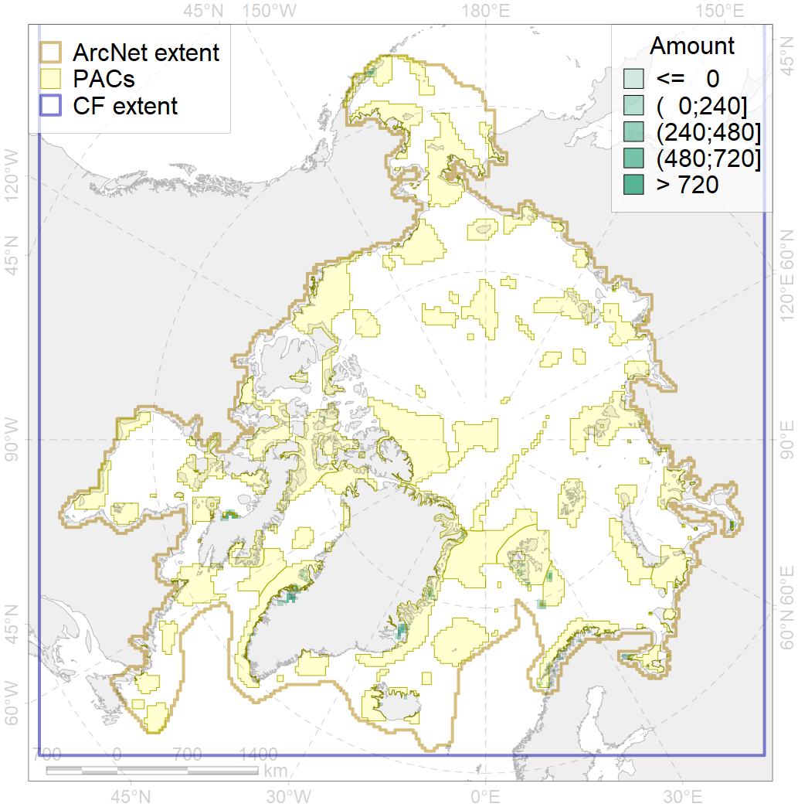
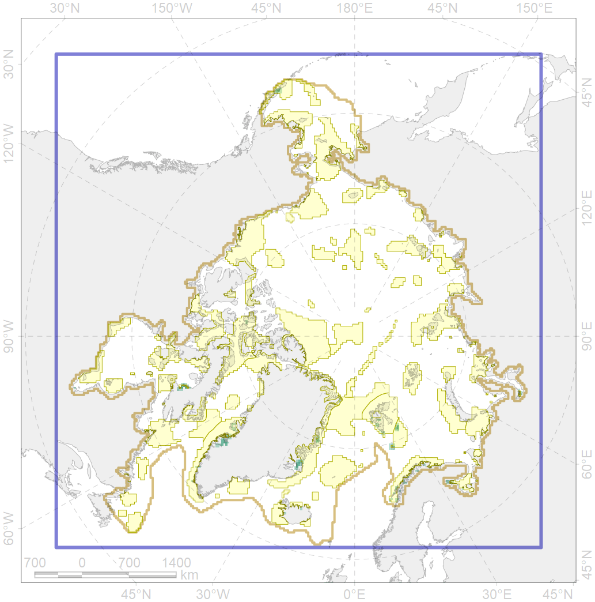

6026

| CF ID | 6026 |
| CF Name | International Ramsar sites |
| Time Period | 2018 |
| Source(s) | Ramsar Sites Information Service https://rsis.ramsar.org/ |
| Seasonality | January-December |
| Depth Horizon | ≥0 m |
| Methodology | Field Data |
| Author Name | Gavrilo, Tertitski |
| Notes | |
| Conservation Target Set in the Scenario | 0 |
| Conservation Target Achieved in the Scenario | NaN (Scenario: Inf%) |
| PAC ID | Proportion in the PAC | Contribution to ArcNet Target Achievement | PAC’s Contribution to the Achieved Target |
|---|---|---|---|
| 1 | 5.8% | Inf% | 9.6% |
| 17 | 4.0% | Inf% | 6.5% |
| 26 | 3.9% | Inf% | 6.4% |
| 27 | 0.5% | Inf% | 0.7% |
| 30 | 2.7% | Inf% | 4.4% |
| 31 | 13.2% | Inf% | 21.5% |
| 32 | 6.3% | Inf% | 10.4% |
| 33 | 1.4% | Inf% | 2.2% |
| 38 | 0.0% | Inf% | 0.0% |
| 41 | 0.0% | Inf% | 0.0% |
| 44 | 7.1% | Inf% | 9.6% |
| 52 | 0.4% | Inf% | 0.6% |
| 74 | 13.9% | Inf% | 22.8% |
| inner | 59.2% | Inf% | 94.7% |
| outer | 39.5% | Inf% | 5.0% |